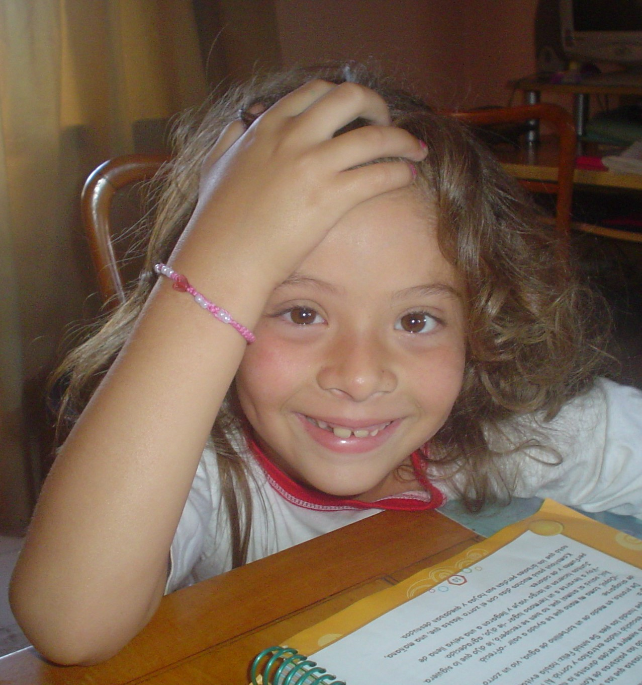

Hola! Me llamo Valentina Pisk, tengo 20 años. Actualmente vivo en Buenos Aires, pero nací y crecí junto a mi familia y amigos en la ciudad de Paraná, Entre Ríos hasta mis 17 años. Durante todo ese tiempo, además de crecer, madurar, educarme y jugar; tuve un gran vínculo en desarrollar la creatividad desde el ámbito artístico, puesto a que en mi entorno era presente la idea de bailar, actuar, pintar, hacer manualidades, etc.
En este contexto, decidí googlear: carrera de diseño, sin ningún apellido; lo que apareció la UTDT, leí el plan de estudio y dije: esto es lo que quiero hacer, cerraba por todas partes el plan de estudio, aunque, la facultad era privada y se encontraba en Buenos Aires. Por consiguiente, estuve en charlas informativas y más me interesaba e ilusionaba la carrera, así que decidí aplicar para la beca de interior con el sueño de que me la dieran ya que sin la beca no era posible estudiar en aquella universidad.
Luego de unas semanas, llegó el mail donde me comentaban que había aplicado a la beca y gracias al promedio que poseía en la secundaria, ingresaba de forma directa. Después de eso, comprendí que se abría un nuevo capítulo y una nueva oportunidad en mi vida.
En el año 2019, obtuve el título de profesora elemental y superior de danzas españolas, aunque aún no he ejercido. Del mismo modo, estudié durante 6 años el idioma inglés lo cual, me brindó una gran ayuda en varias situaciones.
En el presente, estudio la carrera de diseño integral, lo que me brindó varios conocimientos, con base en un diseño gráfico, editorial, industrial, entre otros. Como así también, aprendí una gran cantidad de programas, técnicas de composición, variedad de materiales industriales y sobre todo, la historia del diseño.
Esta carrera además de formarme a nivel educativo, me aportó una gran capacidad de aprender el pensamiento crítico, trabajo en equipo, empatizar o poner como centro al usuario, gestionar proyectos, entre otros. Contar con estos conocimientos, me ayudará a abordar una gran variedad de desafíos y oportunidades de diferentes ámbitos.